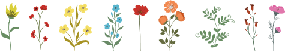
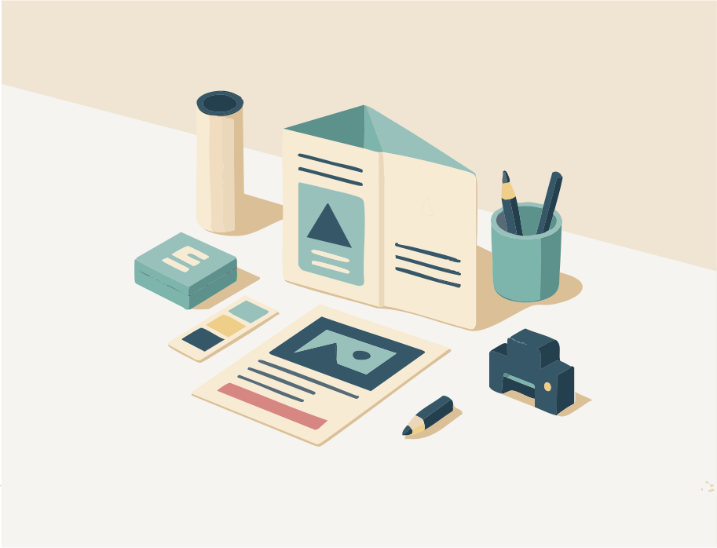

ABOUT ME
What I Can Do
できることと、大切にしていること。

WebとDTPを中心に、Webサイト・バナー・広告物・印刷物、Tシャツやエコバッグなどのグッズ制作まで幅広く担当してきました。
会社やクライアントと一緒に考え、ターゲットにとって喜ばれる形に落とし込むことを大切にしています。
最近はWebデザインスクールで最新のWeb制作ツールを学び、表現の幅を広げています。
DTP

印刷物（パンフ、ポスター、Tシャツ、パッケージ等）の制作を通じて、紙ならではの魅力や表現を学んできました。
Webデザイン

SNS画像、バナー、ランディングページの制作実務や、ターゲット視点の訴求に強み。色・レイアウトを意識したデザインが得意です。
Strength – 強み
媒体が変わっても、全体のトーンや伝えたい印象をそろえて形にしていくことが強みです。ターゲットに寄り添い、成果につながるデザインを意識しています。
Design Approach – デザインへの考え方
日々の気づきやインスピレーションを形にしながら、ユーザーの目線も大切にしています。直感的に伝わること、余白から感じられる心地よさを意識してデザインしています。
Skills – スキル紹介 –
- Illustrator / Photoshop / Premiere Pro / Figma / InDesign ほか
- HTML / CSS / jQuery / VS Code など